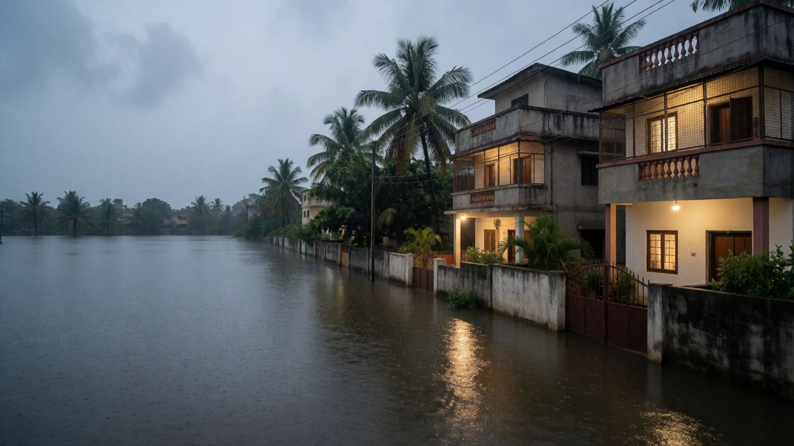
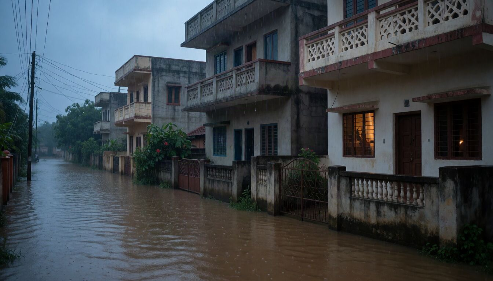

Homes
One unit per household, kept near a window or upstairs, ready to grab with the torch and the documents.
FloodMesh unit
Pre-orders open · Ships after certification
FloodMesh is a small, battery-powered messenger for floods. It sends an SOS and short messages from house to house, with no mobile network, no internet and no power grid.
No payment now. We call to confirm before anything ships.
Why we are building it
Chennai floods. Mobile towers and power failed together. Neighbours 200 m apart could not tell each other they were safe.
Cyclone Michaung. It happened again: no network, no power, and no way to call for help from a flooded street.

Phones need a tower. Towers need power and a link back to the network, and in a flood all three fail at once.
FloodMesh needs none of them. Each unit passes messages to the next, so a call for help can travel down a street and around buildings to a rescue team that has a FloodMesh responder unit.
How it works
There are no towers and no SIM cards. Each FloodMesh unit talks straight to the units nearby and passes messages on, so a message can travel through a whole neighbourhood.
Up to 60 characters on the keypad, in English or Tanglish.
Every unit in reach shows the message, so neighbours can help each other straight away.
Each unit passes the message to the next, so it reaches the next streets too. A unit plugged in on a rooftop carries it further.
Hold two keys for three seconds. Then press one number: medical, evacuation, hazard, food, or general. If you can't choose, it sends a general SOS by itself.
Every FloodMesh unit in your area passes your SOS one step further, house to house, until it reaches a responder unit, the kind we set up for rescue teams. Your neighbours' units pass it on without showing it.
The rescue team sees the help you need and, if your unit is registered, your home's address. Your screen shows DELIVERED, then HELP IS COMING when someone is on the way. If no responder unit can be reached, it shows SOS NOT DELIVERED.
What it does
Type up to 60 characters on the keypad, in English or Tanglish. Everyone nearby can read them and help.
Medical, evacuation, hazard, food or general, so rescue teams can send the right people first.
Units talk directly to each other. Nothing to subscribe to and nothing that fails when the network does.
A unit on external power, from solar or a UPS, acts as a relay: it stays on and passes messages for every unit around it.
Register your unit to your home's address when you get it, and a rescue team sees which house needs help. An unregistered unit still sends its SOS.
Charge it from any USB-C phone charger or power bank, and keep it near a window, upstairs if you can. Designed to last for days on one charge.
Field tests
We test outdoors and share every result, good or bad. These are early numbers from September 2026, between units at street level. Our first rooftop unit was left on battery by mistake, so we are testing it again on proper power; we expect it to reach further.
Who it's for
FloodMesh gets stronger with every unit nearby. The best start is a whole lane, apartment block or colony.
One unit per household, kept near a window or upstairs, ready to grab with the torch and the documents.
FloodMesh unitStreet, neighbourhood, ward, area and village packs at 10% to 30% off, and rooftop antennas so a few units reach further.
See the packsWe set up units as responder units for your team: they receive every SOS, show the type of help and the registered address, and send "Help is coming".
Ask about responder unitsEquip a flood-prone ward or village. We'll plan it with you.
Talk to usQuestions
No. FloodMesh units talk to each other directly. You don't need a phone to send an SOS or a message.
Yes. Type up to 60 characters on the keypad, in English or Tanglish. Every unit nearby shows it, and units pass it on to the next streets. Use messages to check on neighbours, share news or ask for help from people close by; use the SOS to call a rescue team.
The unit runs on its own rechargeable battery and sleeps until a message arrives or you press a key. Charge it from any USB-C phone charger or power bank.
Short messages are public: anyone nearby with a unit can read them, so neighbours can help. An SOS appears only on responder units, but it is not secret: someone nearby with the right equipment could pick up any SOS or message, including the kind of help asked for. Don't send anything you want to keep private.
Rescue teams, NGOs and authorities with a FloodMesh responder unit within reach of the units in your area. Your neighbours' units pass your SOS on but don't show it. If no responder unit can be reached, your screen shows SOS NOT DELIVERED; send a short message too, because every unit nearby shows messages. We set up responder units only for organisations we have checked, so ask your residents' association or local rescue team to contact us.
It depends on buildings, height and how many units are nearby. Each unit passes messages on, so the more homes in your area have one, the further a message travels. See our field tests for measured numbers.
After the approvals and registrations required in India to sell radio equipment with a built-in battery are complete. We will tell everyone who pre-ordered as soon as we have a date.
You pay nothing now. We call you to confirm before anything ships, and you can cancel your pre-order at any time before it ships, at no cost.
One unit is ₹6,900. The more units you buy together, the bigger the discount: 10% off for 10 to 24 units, 15% for 25 to 49, 20% for 50 to 99, 25% for 100 to 249, and 30% for 250 or more. Packs of 10, 25, 50, 100 and 250 units come at these rates, or choose any number from 10 in a custom pack. A rooftop antenna is ₹6,500 and a longer antenna cable is ₹750. Each unit comes with its antenna and a quick-start guide.
The screen is in English. You can type messages in English or in Tanglish (Tamil in English letters).
One unit is ₹6,900, and packs of 10 or more are 10% to 30% off. Pre-order for your home, or talk to us about your colony, NGO or ward. Units ship once certification is complete.